Unix/Linux 上で扱う文書データやシェルスクリプト、VRML、それに図やグラフをプリンタに印刷するときに使った PostScript などは、テキストエディタで読み書きできるテキストデータです。テキストデータは普通そのままターミナル上に表示できますが、テキストデータを読むために便利な機能を備えた more や less などのページャもよく使われます。
PostScript はバイナリデータ（後述）を保持することもあります。
| ページャで VRML ファイルを見る |
|---|
% less data.wrl[Enter] |
| ページャによる VRML ファイルの表示 |
|---|
#VRML V2.0 utf8
DEF ODEN Transform {
children [
Shape {
geometry Sphere { radius 2 } # 球
appearance Appearance {
material Material {
diffuseColor 0.6 0.6 0.6
specularColor 0.4 0.4 0.4
shininess 1
}
texture ImageTexture {
url "http://www.wakayama-u.ac.jp/~tokoi/vrml/face.jpg"
}
}
}
Transform {
translation 0 -4 0
rotation 0 0 1 1.5708
children [
Shape {
:
|
しかし、VRML ファイルを lookat コマンドや gtklookat コマンド（これらは VRML ブラウザと呼ばれます）で表示したり、PostScript ファイルを gv で画面表示したりプリンタに印刷した場合は、テキストデータ（文字データ）としてではなく、それが表す図形として表示されたり印刷されたりします。
| VRML ブラウザで VRML ファイルを見る |
|---|
% gtklookat data.wrl[Enter] |
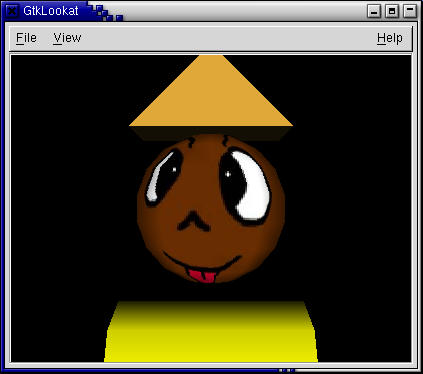 |
| VRML ブラウザによる VRML ファイルの表示 |
|---|
このようにデータファイルがどのように見えるかは、それを表示するプログラムに依存します。また、図形データや画像データの中には、テキストデータとして扱えないものもあります。そういうものは一般にバイナリファイルと呼ばれます。したがって、データファイルの中身を見るには、適切な表示プログラムを使用する必要があります。
とは言っても、データファイルの種類が何かわからなければ、どのプログラムを使って表示すればいいのか判断できません。Unix/Linux では、この判断に次の２つの方法を用います。
ファイル名の拡張子は、ファイル名の後ろに "."（ピリオド）に続けてそのファイルのタイプを示したものです。以下の .ps, .sh, .wrl, .obj, .ps の部分がファイル名の拡張子です。
- kenpou.txt
- テキストファイル
- counter.sh
- sh スクリプト
- data.wrl
- VRML ファイル
- pyramid.obj
- Tgif ファイル
- graph.ps
- PostScript ファイル
但し Unix/Linux におけるファイル名の拡張子の取り扱いは、Windows ほど厳密ではありません。オペレーティングシステムから見ればファイル名の拡張子もファイル名の一部に過ぎず、それをどのように扱うかはアプリケーションソフトウェアに任されています。
magic とはマジックナンバーのことですが、ファイルのタイプに対して実際に番号が割り振られているわけではありません。これは file コマンドがファイルの中身を調べるときにヒントとして使っているファイルの先頭のデータのパターンです。パターンのデータベースは /usr/share/magic というファイルにあります。詳しくは man file および man magic で表示されるマニュアルを読んでください。
| file ～ファイルの種類を調べる |
|---|
% file counter.sh[Enter] counter.sh: Bourne shell script text executable % file graph.ps[Enter] graph.ps: PostScript document text conforming at level 2.0 |
Unix/Linux ではファイル名の拡張子による判断があてにならない（拡張子が付いていないものが多い）ため、これを使って中身を確認するアプリケーションソフトウェアもあります。もちろん、magic がデータベースに登録されていないファイルは判断できません。
Tgif では、図を線分や円などの図形要素の組み合わせで表現しています。このような図のデータは、一般にベクトルデータと呼ばれます。PostScript や EPS、PDF などもベクトルデータです。これに対して、写真のように色のついた点（画素、ピクセル）の集合で画像を表現したものは、ビットマップデータ呼ばれます。Windows の画像データである BMP や、デジタルカメラや Web で使用される JPEG などがビットマップデータです。普通、画像データと言えば、ビットマップデータのことを指します。
ベクトルデータは拡大縮小してもぼやけたりつぶれたりすることがありませんが、写真のような画像を扱うことが困難です。ただし、ベクトルデータでも図形要素の一つとしてビットマップデータを保持することは可能です。
図形ファイルや画像ファイルを画面に表示するソフトウェアを、一般にビューアと言います。ページャも言わばテキストファイルのビューアです。
| 拡張子 | ファイルの種類 | ビューア |
|---|---|---|
| .ps | PostScript | gs, gv, ggv, ghostview |
| .eps | Encapsulated PostScript | |
| Portable Document Format | xpdf, acroread | |
| .gif | Graphics Interchange Format | display, ee, eog, gqview, gtksee |
| .jpg, .jpeg, .jfif | JPEG File Interchange Format | |
| .bmp | Microsoft Windows Device Independent Bitmap | display, ee, eog, gtksee |
| .tif, .tiff | Tag Image File Format | display, ee, eog |
| .png | Portable Network Graphics | display, ee, eog, gqview |
| .tga | TrueVision Targa | display |
- PostScript
- Adobe 社が開発したプリンタ制御用の言語。PDL (Page Description Language: ページ記述言語）の一つ。印刷物の「ページ」に文字や図形、画像などを配置します。PostScript は PostScript プリンタに組み込まれたインタプリタによって解釈されますが、gs (Ghostscript) はそれと互換性のあるインタプリタソフトウェアです。gv, ggv, ghostview は gs にユーザインタフェースを付けたものです。
- Encapsulated PostScript
- 他の PostScript ファイルに埋め込んで、一つの図形要素として使えるようにカプセル化された PostScript 形式のファイル形式。
- Portable Document Format
- ページのレイアウトを保持したまま文書の交換を行うための、PostScript から派生したデータ形式。異なるコンピュータ間で文書ファイルのレイアウトを正確に再現できるため、マニュアルなどの電子化に用いられている。PostScript ファイルから gs を使って作成できるほか、Tgif でもこの形式でファイルを出力できます。
- Graphics Interchange Format
- パソコン通信 (CompuServe) において画像データを交換するために考えられたファイル形式 (GIF)。同時に 256 色までしか表現できないため写真などの表現には向かないが、コンピュータの画面表示など単調な色使いの画像ならかなりデータサイズを小さくできるため、Web のバナーなどに多用されている。ただし、データの符号化方法として使われている LZW (Lempel-Ziv Welch) という手法はコンピュータメーカーの UNISYS 社が特許を持っているため、UNISYS 社が許諾したソフトウェア以外でこの形式の画像ファイルを作成して使用することは問題がある。
- JPEG File Interchange Format
- JPEG (Joint Photographic Expert Group) という団体によって開発された写真画像の符号化方式を用いた、画像ファイルの形式 (JFIF)。写真画像を効果的に圧縮できるが、GIF とは逆に単調色使いの画像に用いると、かえって画像が乱れる場合がある。
- Microsoft Windows Device Independent Bitmap
- Microsoft Windows で用いられている画像ファイルの形式。
- Tag Image File Format
- Aldus 社（後に Adobe 社に吸収）と Microsoft 社が共同で開発した、さまざまな画像データを保持できる画像ファイルの形式。
- Portable Network Graphics
- GIF の特許問題や色数の制限など問題を回避するために、新しく考えられた画像データの形式。データの符号化方法には LZW より効率がよく特許の問題もない手法が採用されている。また色数も 256 色のほかにフルカラー画像も扱えるようになっている。
- TrueVision Targa
- TrueVison 社の画像取り込み装置が出力する画像ファイルの形式。多くのビデオ編集システムで、ひとコマ単位の画像データとして使用されています。LightWave などの CG ソフトウェアでも、この形式で画像を出力できます。
ビューアソフトウェアの中でもっとも手軽に使用できるのは ee (ElectricEyes) でしょう。display は ImageMagick という画像管理ソフトウェアの一部で、非常に多機能です。この他に、画像の表示機能はありませんが netpbm というコマンド群があり、これを使うとたいていの画像ファイルの形式を別の画像ファイルの形式に変換することができます。
gimp （このページの日本語訳はここ）は非常に高機能な画像編集ソフトウェアです。この分野のソフトウェアでは Adobe 社の PhotoShop が有名ですが、gimp もそれに劣らない多機能性を誇っています。詳しい使い方はマニュアル（このページの日本語訳はここ）を読んでください。
ターミナルのウィンドウで gimp コマンドを実行してください。
| gimp の起動 |
|---|
% gimp[Enter] |
最初に gimp を起動したときには、初期設定のウィンドウが現れます。
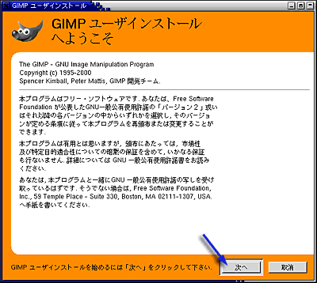
このソフトウェアは GPL (GNU General Public License: GNU 一般使用許諾) のもとに配布されているソフトウェアです。そのまま「次へ」をクリックしてください。
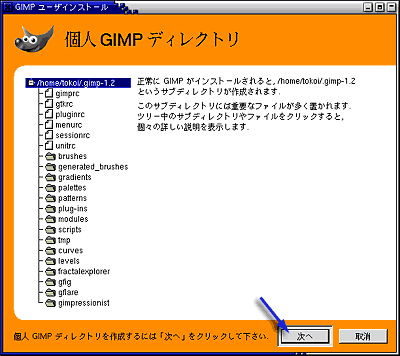
gimp はここでホームディレクトリに .gimp-1.2 というディレクトリを作り、そこに設定ファイルなど各種のファイルを置きます。そのまま「次へ」をクリックしてください。
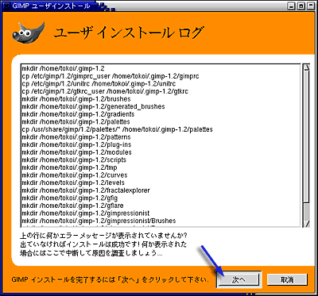
.gimp-1.2 というディレクトリの作成作業のログを表示します。エラーがなければ「次へ」をクリックしてください。
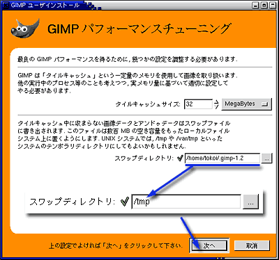
タイルキャッシュサイズが大きいほど、大きな画像の編集作業が軽快になりますが、コンピュータに搭載されているメモリよりも大きな値を指定するとかえって遅くなります。演習用のコンピュータには 512MegaBytes のメモリが搭載されているので、オペレーティングシステム等他のプログラムが使用するメモリを差し引いても、タイルキャッシュサイズに 256MegaBytes くらい指定できると思いますが、一応上限は 128MegaBytes くらいにしておいて下さい。
編集中にタイルキャッシュに入らなかったデータはスワップディレクトリ内のファイルに書き出されます。標準のスワップディレクトリはホームディレクトリの下に置かれますが、ホームディレクトリはネットワークを介してサーバコンピュータ上にありますから、ここをスワップディレクトリに使うとネットワークの通信量が増えたりサーバの負荷が増大したりしていいことありません。/tmp は演習用のコンピュータ自身のハードディスクにありますから、そこをスワップディレクトリに指定します。
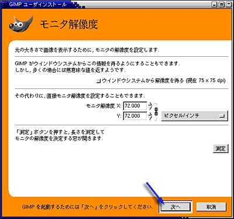
モニタの解像度は、「測定」ボタンを押して調整しても構わないのですが、今は時間がないのでそのまま「次へ」をクリックしてください。これで gimp の初期設定が完了しました。
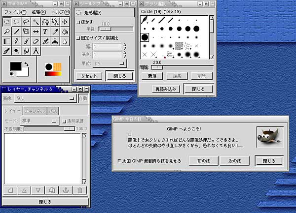
これが gimp の起動画面です。次回からはここから始まります。
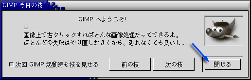
毎回起動すると、「今日の技」を教えてくれます。技を会得したら、「閉じる｣をクリックしてください。
それでは、とにかく何か描いてみましょう。まず、「白紙」の画像を用意します。"The GIMP" ウィンドウの「ファイル｣メニューから「新規」を選ぶか、Ctrl-N をタイプしてください。
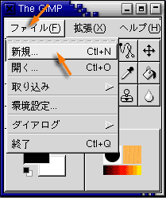
すると次のウィンドウが現れます。ここで作成する画像の大きさや解像度を指定します。
画像のサイズは作成する画像を構成するピクセル（輝点、画素）数です。解像度は、単位がインチなら（コンピュータはアメリカ由来のものなので、単位として結構インチが使われます）１インチあたりのピクセル数です。上の設定のそれぞれの数値には、次のような関係があります。
画像の種類の RGB はカラー、グレースケールは白黒を意味します。塗り潰しの種類は新規に作成する画像の下地の色です。前景と背景は、"The GIMP" ウィンドウの色設定を使います。

設定が完了したら「了解」をクリックしてください。「名称未設定」というタイトルが付いた作画ウィンドウが現れます。同時に、「レイヤー、チャンネル & パス」ウィンドウに「背景」という項目が現れます。
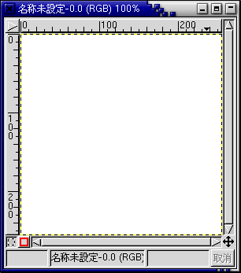

それではここに何か描いてみましょう。最初に会得した「技」のとおり、GIMP のほとんどの機能は、この作画ウィンドウ上でマウスの右ボタンをクリックして現れるメニューで呼び出すことができます。
まず、ペンの色を決めます。前景色は描画に使う色です。前景色を設定するには、"The GIMP" ウィンドウの「前景色の設定」をクリックしてください。

すると「色選択」のウィンドウが現れます。色の選択方法は４種類ありますが、そのうちの "GIMP" について解説します。

使いたい色の色相 (Hue) を真ん中の縦棒から選びます。そして左側の領域で彩度 (Saturation) と明度 (Value) を調整します。この順番はどうでも構いません。もちろん、右側のスライダをドラッグしても調整できます。このウィンドウは、邪魔なら閉じても構いませんが、開きっぱなしでも問題ありません。
次に作画に使う画材を選択します。試しに「絵筆」を選んでみましょう。

そして、絵筆のブラシ形状を選択します。ここでは小さ目の、くっきりとしたブラシを選択してみます。
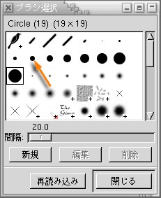
その後、作画ウィンドウでマウスを動かします。失敗したと思ったら、Ctrl-Z をタイプするかマウスの右ボタンをクリックして「編集｣メニューから「アンドゥ」を選べば、操作を取り消すことができます。ちなみに「リドゥ｣は、取り消した操作をもう一度やり直します。

上の絵のように閉じた領域には、「ペンキ缶」を使って色を流し込むことができます。ここではパターンで塗り潰すことにします。「塗り潰しツール（ペンキ缶）」を選んだ後、「パターン設定｣をクリックしてください。
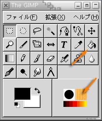
「ペンキ缶」を選ぶと「ツールオプション」のウィンドウが「塗りつぶし」の設定に変わります。ここで「パターン塗り」を選んでください。また「パターン設定」をクリックすると「パターン選択」のウィンドウが現れますから、ここから塗りつぶしに使うパターンを選んでください。

あとは塗りつぶす領域をマウスでクリックして、その領域を塗りつぶしてください。
描いたものを消すには、「消しゴム」を使います。

これは絵筆などと似ていますが、描画に背景色を使います（「背景」のレイヤーの場合）。
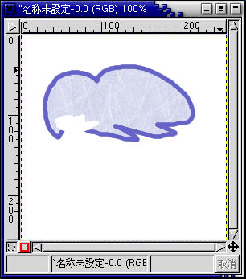
領域を選択して消すこともできます。例えば、次の方法で楕円形の領域を消すことができます。まず「円形領域の選択」を選択してください。
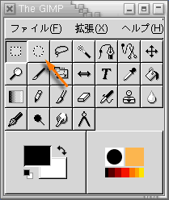
そして作画ウィンドウ上で領域を選択し、マウスの右ボタンで現れるメニューの「編集｣から「カット」を選んでください。
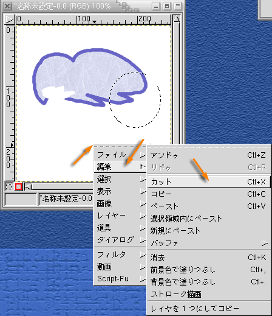
選択した部分が消されます。
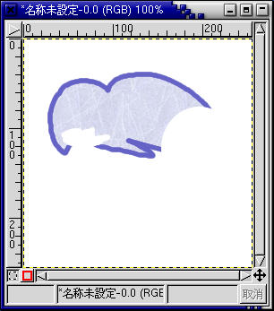
「楕円形選択」のツールオプションで選択範囲をぼかすことができます。

これは次のような消し方になります。
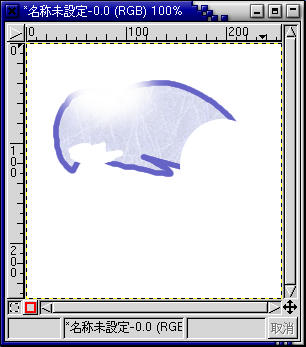
Ctrl-S をタイプするか、マウスの右ボタンで現れるメニューの「ファイル｣から「保存」を選んでください。
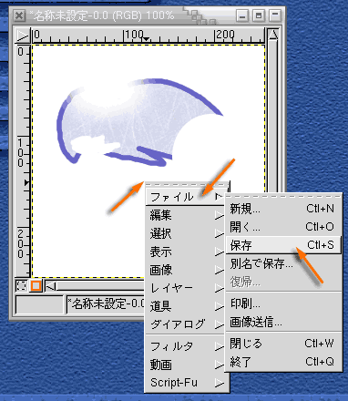
ファイル名を指定します。拡張子は保存するファイルの形式で決定してください。

JPEG 形式で保存するときは、次に保存する際の品質（画質）を設定します。
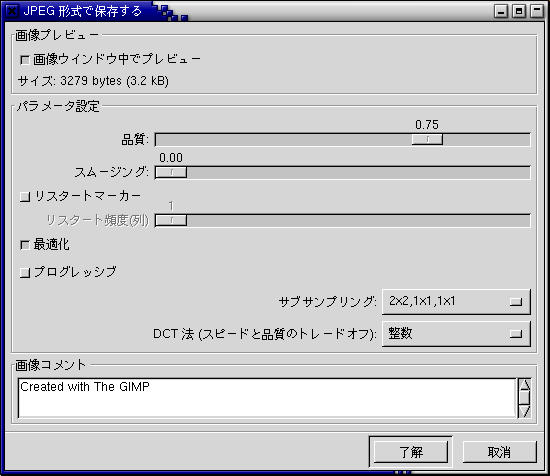
品質が高いほど画像は忠実に保存されますが、その分データサイズが大きくなります。
Script-Fu を使ってロゴを作成し、それを適当な画像と合成して Web ページ用のバナーを作りなさい。
{kind=link}
{kind=link}
{kind=link}
{kind=link}
{kind=link}